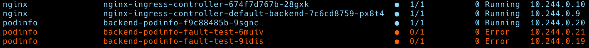
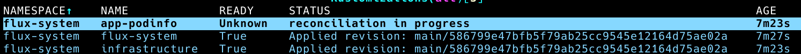
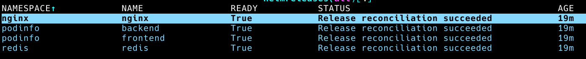
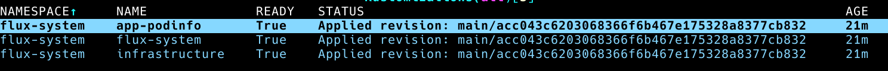

Demo: Flux2 Health Checks & Dependencies
This demo is used to show the following features of Flux2:
- Health Checks
- Dependencies
The key takeaways of this demo are to show that these 2 features can be used to ensure that services are started in order in a predictable way.
Setup
-
Fork the flux-nonprod-clusters repo.
-
Create a GitHub Personal Access Token (pat) with the repo scope.
-
Set the following environment variables:
export GITHUB_TOKEN=<your-pat>
export GITHUB_USER=<your-username>
- Ensure the apps/dev/backend-values.yaml file contains the following and this is committed and pushed to your form:
apiVersion: helm.toolkit.fluxcd.io/v2beta1
kind: HelmRelease
metadata:
name: backend
namespace: podinfo
spec:
chart:
spec:
version: ">=1.0.0-alpha"
test:
enable: true
values:
faults:
testFail: true
This ensures the Helm tests are run and that the tests fail
Demo Script
-
Open the cloned repo in VSCode or your favourite editor.
-
Open the following files and point out the import aspects which include (not exhaustive list):
- apps/base/podinfo/backend.yaml - the HelmRepository ref for the chart source and also that its going to act a gRPC server.
- apps/base/podinfo/frontend.yaml - that this service dependsOn the backend service and that it contains the URL for communicating with the backend service.
- apps/dev/backend-values.yaml - helm tests are enabled and set to fail. Also the chart version.
- clusters/dev/app1-podinfo.yaml - it uses the kustomization from ./apps/dev and dependsOn the infrastructure. There is also a Health Check defined that will be used to determine if to report Ready. The health check will use the frontend HelmRelease.
At this stage explain that we now have a dependency chain: infrastructure<-Kustomization(app-podinfo)<-HelmRelease(frontend)<-HelmRelease(backend)
- Open 2 terminal windows (or terminal panes)
The following steps will refer to a terminal window/pane using the following (term1) or (term2) and this window pane should be used.
- (term1) Create a cluster to represent the
devenvironment using kind:
kind create cluster --name=kubecoins-dev
- (term1) Check that Flux2 pre-reqs are met:
flux check --pre
-
(term2) Start k9s and show all pods
-
(term1) Bootstrap Flux2 using your cloned repo:
flux bootstrap github \
--context=kind-kubecoins-dev \
--owner=${GITHUB_USER} \
--repository=flux-nonprod-clusters \
--branch=main \
--personal \
--path=clusters/dev
- (term2) Watch Flux2 controllers start up and wait until they are running.
Explain about the Flux2 bootstrap process if needed
-
(term2) Watch the infrastructure (nginx/redis) pods start up and wait until they are running.
-
(term2) Point out that the backned-podinfo pod is running but the backend-podinfo-fault-test pods have failed (these are the pods from the Helm test):

- (term2) Change k9s to show the kustomizations.kustomize.toolkit.fluxcd.io instances (hit esq, enter crds, select the kustomizations crd):

Explain that the kustomization isn’t ready as its health check isn’t passing and thats because the frontend HelmRelease isn’t ready.
- (term2) Change k9s to show the helmrelease.kustomize.toolkit.fluxcd.io instances (hit esq, select the helmreleases crd):

Explain why the two HelmRelease for podinfo aren’t ready. The backend isn’t ready even though the pod is running as the helm test failed. And the frontend isn’t ready as its dependency isn’t ready.
- We will now fix the solution. In your editor change apps/dev/backend-values.yaml so it is the same as this:
apiVersion: helm.toolkit.fluxcd.io/v2beta1
kind: HelmRelease
metadata:
name: backend
namespace: podinfo
spec:
chart:
spec:
version: ">=1.0.0-alpha"
test:
enable: false
-
(term1) Add, commit and push this change
-
(term2) In k9s watch the HelmReleases change state to Ready.

Explain the first backend is ready as Helm test is no longer failing which means that frontend‘s dependencies are met and it can them be applied and will become ready.
- (term2) Change k9s to show the kustomizations.kustomize.toolkit.fluxcd.io instances (hit esq, select the kustomizations crd):

Explain that the kustomization is now Ready because the Health Check which is passing. The health check is on the frontend HelmRelease.
- (term2) Changes k9s to show all the pods (enter :, enter pods):